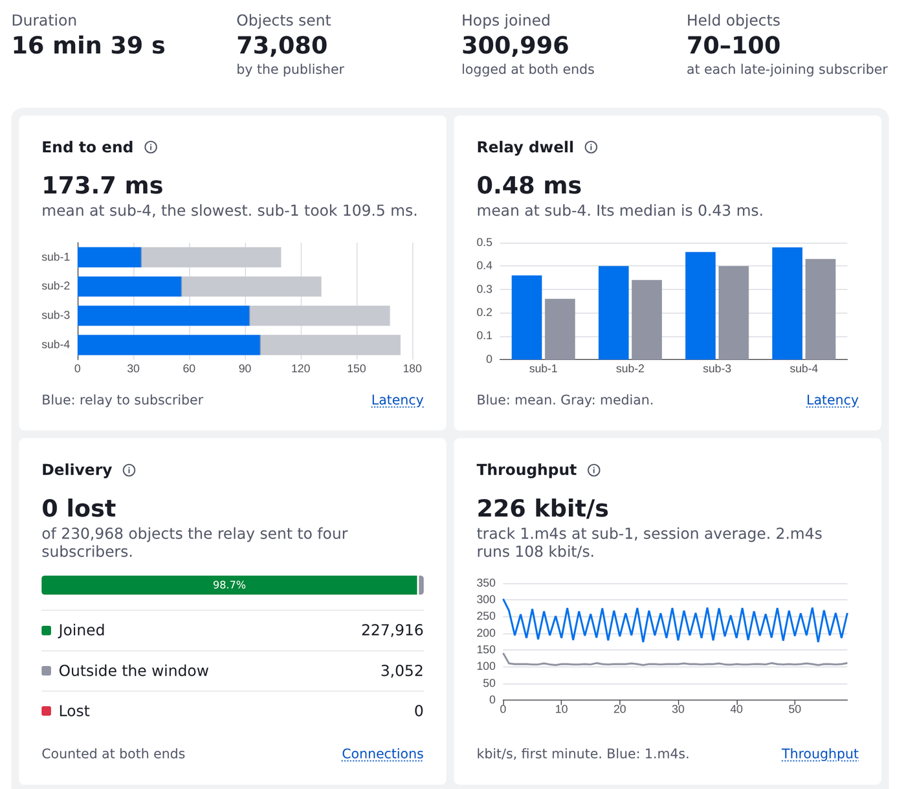
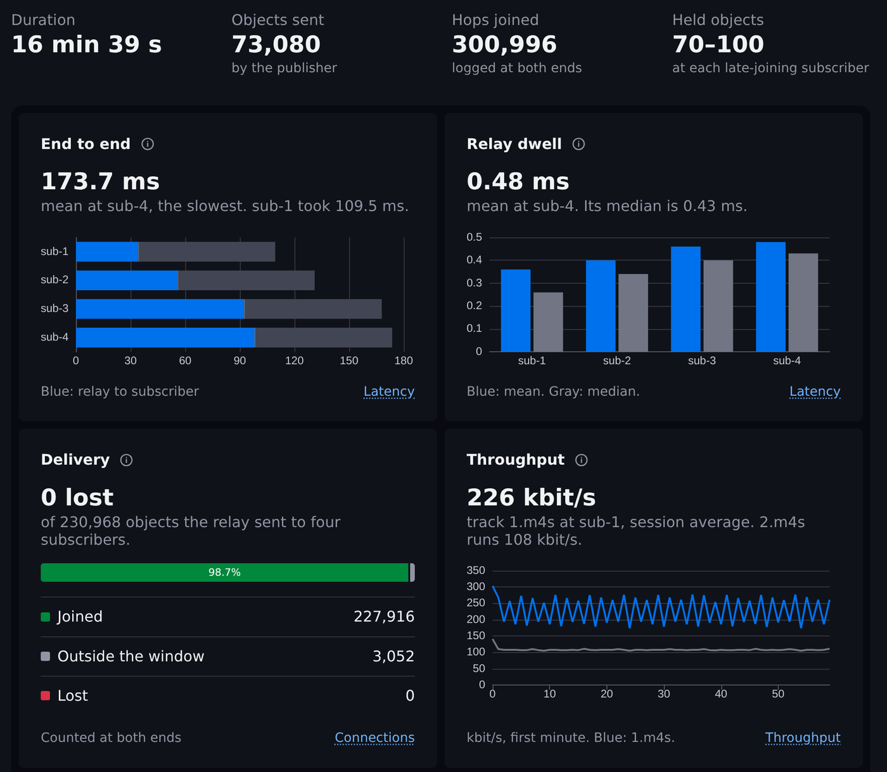

Latency, jitter, loss.
What's happening in your MoQ session?
MoQ Analyzer reads the mlog files from your publisher, relay, and subscribers.
It reveals metrics like pub to relay latency, intra-relay latency, object loss, jitter, and others.
It runs 100% in your browser. Your logs stay on your machine.
No logs at hand? Load a sample: six POPs, every log or a stock moq-rs relay.
From a real capture
One publisher, one relay, and four subscribers, each on its own AWS host. Here's where the time went.


Capture real-6pop, 227,651 object deliveries measured end to end. Clocks synced with chrony. Analyzed
2026-09-20.
What it needs from your logs
mlog files (qlog-format event logs for MoQT), named <cid>_client.mlog or
<cid>_server.mlog, plain or gzipped. Drop in what you have.
-
A relay's logs alone give relay dwell, object bitrate, and interarrival. This works
with stock moq-rs: it writes no
stream_idand noreference_time, and the analyzer recovers what it needs. - Logs from both ends of a connection add object loss.
-
Logs from every host, each with a
reference_time, add latency on each network leg and end to end. That needs synced clocks, and a moq-rs build that writes the field.
Send me your mlogs
If you run a MoQ relay, publisher, or player, I'd like to test against your captures, including ones that don't load yet. Email hello@moqanalyzer.com.